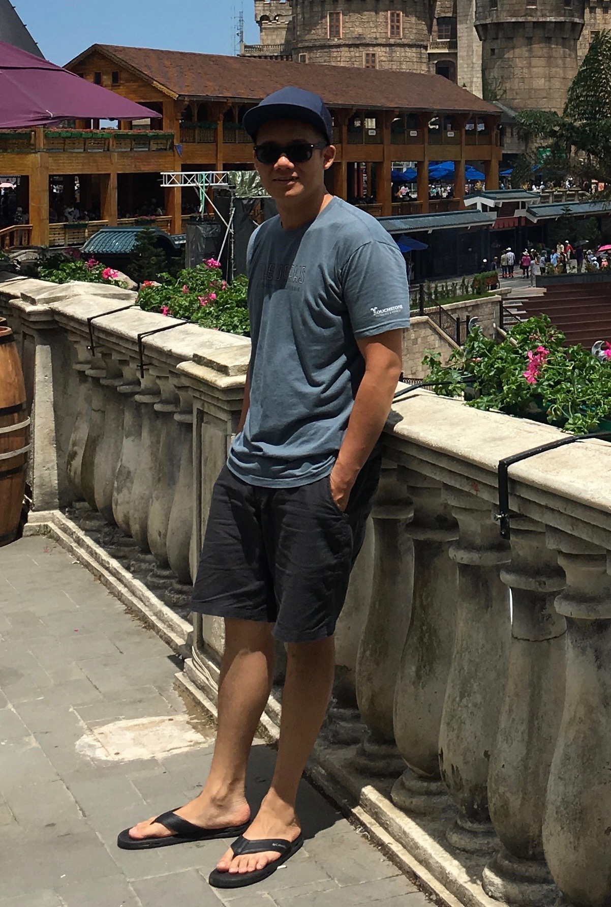

About Me

Hi everyone! My name is Jimmy Nguyen and I'm from Antioch, Ca. Grew up in the East Bay and have eight years experience working in the medical field as a Sterile Technician. Currently working at John Muir Medical Center in Walnut Creek. Looking for a career change in Web Development. Friendly atmosphere with a creative attitude is what brought me here. My hobbies including rock climbing and lifting weights. Thanks for stopping by!